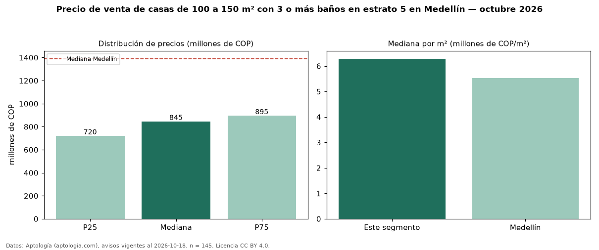

Precio de venta de casas de 100 a 150 m² con 3 o más baños en estrato 5 en Medellín — octubre 2026
COP 845 millones es el precio mediano de casas de 100 a 150 m² con 3 o más baños en estrato 5 en venta en Medellín (n = 145 avisos). Eso es 3 % más que la mediana de las casas de 100 a 150 m² en estrato 5 en venta de Medellín (COP 820 millones, n = 194); este segmento reúne el 75 % de esos avisos. Por metro cuadrado, la mediana es COP 6,29 millones/m² (n = 141), 1 % por encima de las casas de 100 a 150 m² en estrato 5 en venta de Medellín (COP 6,20 millones/m²). El área mediana anunciada es 133 m². El segmento con más oferta es el de 3 o más habitaciones (142 avisos, mediana COP 848 millones). La administración mediana declarada es COP 510.000 al mes (n = 71). La mediana de todas las casas en venta de Medellín es COP 1,39 mil millones (−39 % de diferencia). 92 % de los avisos con el dato declara parqueadero. Datos: Aptología (aptologia.com), CC BY 4.0 — https://www.aptologia.com/venta/medellin. Archivos: PDF, CSV con las cifras y gráfica PNG.

| Avisos únicos | 145 |
|---|---|
| Percentil 25 | COP 720.000.000 |
| Mediana | COP 845.000.000 |
| Percentil 75 | COP 895.000.000 |
| Mediana por m² | COP 6.285.714 |
Fuente: avisos vigentes de portales inmobiliarios recopilados por Aptología, deduplicados (mínimo 30 avisos únicos por celda). Precios pedidos, no cerrados. Fecha: 2026-10-18.